Inspiring photographs from the new book by Taunton Press
Back to Nature. Solitude. Escape. Intimacy. Self-sufficiency.
Romance. Refuge. Resourcefulness. Nostalgia. These are the
feelings cabins evoke and they're at the root of my passion for this
elemental building form.
-Dale Mulfinger, architect cabinologist and co-athor of The Cabin
The shell for this cabin (left and far left)
was a precut post-and-beam kit that was
constructed by three people during a
three-week vacation. The cabin sits on
the shore of Washington's Whidbey
Island.
Featuring an outdoor fireplace, this open-
air sleeping porch provides maximum
contact with the outdoors and views of the
surrounding San Juan Islands.
Recycled mahogany windows and six other species of
wood create the rich paneling in the living room of this whimsical
cabin on tiny Watch Island in New York's Adirondack Mountains.
The cabin sports
solar panels, a
wind
generator and a
composting toilet.
The front porch of this East Coast
log cabin provides a 270-degree
view of the surrounding marsh and
wildlife.
of Frank Lloyd Wright's last works was this cabin, now open for overnight
stays, in Mirror Lake State Park in Wisconsin.
This little writer's cabin sits lightly in the
woods of upstate New York. The porch
posts are rot-resistant ash cut from
standing dead trees on the property.
This Scandinavian inspired cabin by architect
Edwin L undie features a fireplace and
foundation made from local granite and
white pine mortise-and-tenon joinery.
This simple owner-built, one-room log cabin sits
high above Lake Superior. Despite its modest size,
the carefully planned room seems much bigger
thanks to the loft and porch.
A ship's ladder
provides access to the sleeping loft over the
main living area. When not in use, the ladder
is stored the loft to free needed space.
Adapted with permission from The Cabin , published by Taunton Press. To order The Cabin , MOTHER's Hideaway Cottage or Owner-Built AFrame Plans, see Pages 119 and 121.
|
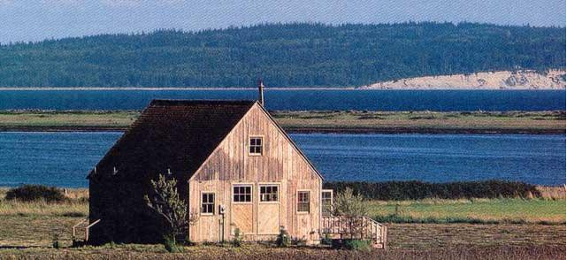 |
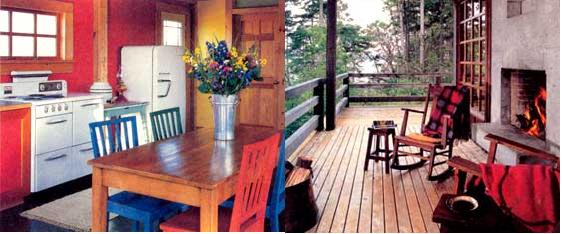 |
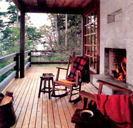 |
|
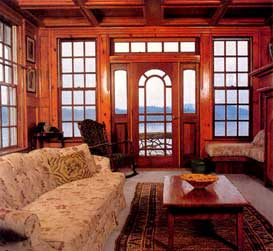 |
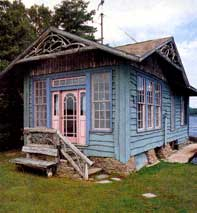 |
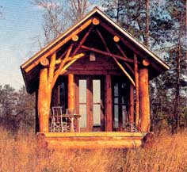 |
|
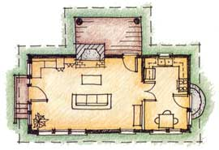 |
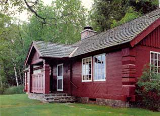 |
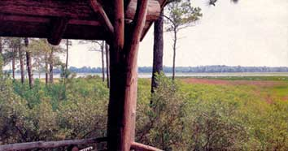 |
|
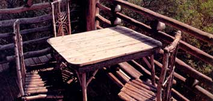 |
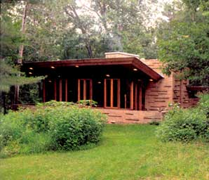 |
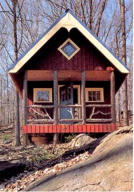 |
|
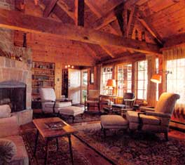 |
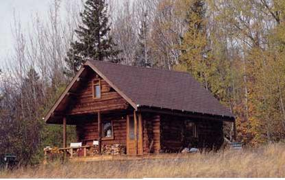 |
|
|
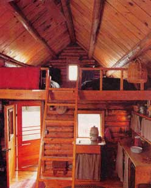 |
|
|